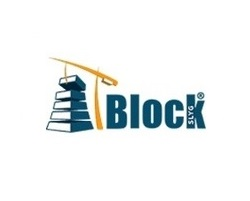

SLYG Block is a platform to manage construction projects within the modern trend of professional management with computer support. It guarantees results by controlling the processes of all activities that affect costs and execution times. It operates in the cloud and is easy to use. This component, available to block users, allows calculating the percentage of administrative expenses in the budget of a project, taking into account the following parameters: Direct costs, indirect costs, percentage of contingencies, percentage of profit and total percentage of the project , being the latter requested by Colombian legislation. In this way, an adequate value is obtained without incurring monetary losses in the project.
For more information about block, click here to see this video.
